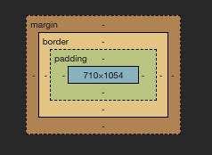

Web utvikling I
Forkortelser brukt i teksten:
- CERN - Conseil européen pour la Recherche nucléaire (European Organization for Nuclear Research)
- CSS - Cascading Style Sheets
- HTML - HyperText Markup Language
- HTTP - HyperText Transfer Protocol
- HTTPS - HyperText Transfer Protocol Secure (eller HTTP over TLS)
- IP - Internet Protocol
- MDN - Mozilla Developer Network
- TCP - Transmission Control Protocol
- TLS - Transport Layer Security
Utvikling av WWW (over Internett) har foregått i diverse felleskap, organisasjoner og bedrifter siden tidlig på 1990-tallet, når TimBL (Tim-Berners Lie), en forsker ved CERN, forelso en implementasjon av klient-serverarkitektur for å dele elektroniske dokumenter, som innehold hypertekst.
For at to datamaskiner skal kunne kommunisere over et nettverk (f. eks. Internett), begge trenger å starte minst et program som "hører" på signaler fra "utsiden". Et slikt program kan også kalles for en prosess. En prosess kan defineres som kode som er lastet inn i datamaskinens primære minne og administreres av en mengde andre programmer, ofte kalt for operativsystemet (disse er nødvendig i datamaskiner som er designet for generelle operasjoner, dvs. datamaskiner som kan utføre mange programmer for en ordinær (for)bruker samtidig). To typer av programvare er blitt vanlig når man betrakter webapplikasjoner, - nettleserer og webservere. Nettlesere er applikasjoner som utfører på klient-siden og webservere er applikasjoner som utfører på server-siden.
I dag er det er fåtalls dominerende aktører (og applikasjoner) både på klient- og server-siden. På klient siden er de fleste kjent med nettlesere som Google Chrome, Edge, Safari og Mozilla Firefox (det finnes forskjellige varianter for de som ønsker mer tilpasset "browsing", som Tor Browser, Brave, Opera). Alle disse nettleser-programmer blir distribuert av leverandører i forskjellige varianter - for skrivebordsdatamaskiner, tabletter og smarttelefoner.
På serversiden har applikasjoner som Apache Webserver (httpd) og Nginx vært dominerende, men er ikke lenger nok til å implementere en stabilt server-side. Server-sidene er per i dag samlinger av diverse programmer, som kan tilby diverse typer tjenester til klient-sidene. Det er vanlig å bruke en "tradisjonell" webserver (Nginx, for eksempel) for å balansere belastning, som skapes når mange brukere prøver å laste ned ressurser fra en server samtidig, og andre type programmer (skrevet i JavaScript, PHP, Python, Go, C#, C++ osv.) for å hente data fra databaser og dynamisk skape responsen til en nettleser.
Det er en vanlig oppfatning at utbredelsen av Internett og WorldWideWeb (eller web, som vi ofte kaller det), har vært mulig på grunn av stabile og åpne standarder for hvordan data mellom nettlesere og webservere skal utveksles. Når en ønsker å utbedre eksisterende programmer for både klient- og server-siden, så trenger man følge slike standarder nøye. Det er også muligheter til å delta i å utvide standarder og det skjer vanligvis gjennom såkalte konsortier. Eksempel på de viktigste standarder er TCP/IP, som har ikke vært mye endret siden 1970-tallet og HTTP, som har vært noe mer endret i de siste årene, men som har beholdt grunnleggende definisjon for en protokoll for å utveksle meldinger mellom nettleser og webserver. Disse standardene har blitt utvidet med diverse tillegg, spesielt for kryptering (HTTPS) og for effektivitet (HTTP/2 og HTTP/3). I dag brukes det minst tre forskjellige versjoner av HTTP om hverandre. Med "minst" menes her at det kan være flere varianter av HTTP/2 og HTTP/3, som er implementert på webservere, og at utviklingen av slike varianter pågår kontinuerlig.
På klient-siden finnes det en tilsvarende "stabil" standard, - HTML. Selv om det er blitt mange tillegg til denne standarden siden begynnelsen på 2000-tallet (spesielt for å inkludere diverse mediatyper, som video, bilder og lyd), har den beholdt en stabil basisspesifikasjon. Den gjeldende versjonen nå er HTML 5.
TimBL utviklet HTML og HTTP kun for tekst-baserte dokumenter. Fort oppsto det behov for å gjøre dokumentente mer estetiske, dvs. gjøre det grafiske brukergrensesnittet mer brukbart for de fleste brukere av datamaskiner. Det resulterte i en tanke om å adskille innholdet fra formen, dvs. lagre innhold på en måte, som ga mulighet til å bytte formen eller stilen på innholdet med mindre endringer i koden. Denne tanken var bakgrunn for utviklingen av Cascading Style Sheets, som er kode, som gir mulighet til å "pynte" på innholdet i en webside. I tillegg oppsto det også et behov å gjøre en del dynamiske endringer på klient-siden, siden det vær ikke alltid effektivt å hente data fra server-siden når klient-siden trengte det. Derfor tenkte man på en modell, hvor man kunne overføre mer data fra server-siden til klient-siden enn det som brukeren forespurte der og da, for å eventuelt unngå å gjøre nye overføringer når brukeren forespurte mer av data, som hørte sammen med de opprinnelig forespurte dataene. Denne modellen er implementert i dag gjennom en "motor", som bruker et programmeringsspråk - JavaScript. Prinsippet kort forklart er at klient-siden forespør ressurser fra server-siden og laster disse inn i sitt primære minnet. Disse ressursene inneholder ikke bare HTML-kode, men også små programmer skrevet i JavaScript, som kan utføres under innlasting eller senere som en respons på brukerens handlinger på brukergrenssnittet.
Dette er en meget forenklet beskrivelse av utviklingen av webapplikasjonsrammeverk, men det bare illustrerer det faktum at dagens webutviklere trenger å bli kjent med HTML, CSS, JavaScript og ha en grunnleggnde forståelse av HTTP. I tillegge trenger webutviklere beherske en rekke verktøy, som er både inkludert i de dominerende nettleserapplikasjoner og som kan installeres som uavhengige applikasjoner. Testrammeverk, som er implementert som webapplikasjoner (codepen, jsfiddle osv.), er også et verktøy man kan dra nytte av.
Som en inngang til denne omfattende verdenen av diverse standarder, programmer og rammeverk, anbefales det Mozilla Developer Network (MDN) sine ressurser. Det finnes selvsagt mange andre muligheter tilgjengelig på WWW. Standarder finnes på W3C sine sider.
Posisjonering
I Pyret brukte vi empty-scene eller en figur som hovedvindu for tegning. Hovedvinduet ble presentert som en "verden" med et koordinatsystem (X- og Y-retning hvor avstand ble målt med spesifikke enheter) eller et annet posisjoneringssystem (venstre, høyre, øverst, nederst). I nettlesere er hovedvinduet scenen hvor alle elementene blir lagt på (tegnet eller "rendered"). Størrelser og posisjoner i nettleservinduet bruker forskjellige målenheter (.htm). I begynnelsen av web-tiden (første nettleser til TimBL var WorldWideWeb .htm) var nettleser bygd opp som en samling av vinduer og hvert vindu kunne inneholde tekst, meny, ikoner, knapper og bakgrunnsbilder som elementer. Tekst ble vanligvis formattert basert på et dokumentmodell, dvs. som et slags dokumentmal med tittel, overskrifter og brødtekst, som gjenspeilet både tradisjonelle formater fra boktrykkeri og formell kommunikasjon (lover, kontrakter og andre formelle dokumenter). Alle disse elementene finnes også i de moderne versjonene av HTML.
På grunn av stor variasjon av programmer, er webdesign en utfordrende oppgave, hvis målet er å lage et brukergrensesnitt som oppleves brukbart for de fleste brukere på de fleste av de mest populære platformene (Apple, MS Windows, iOS, Android). Arsenalet av verktøy for webutviklere har blitt meget stor de siste årene og muligheter til å skape brukbare grensesnitt er veldig mange. La oss først betrakte noen sentrale begreper.
Responsiv webdesign er en tilnærming hvor designer forsøker å lage kode, som vises frem brukbart på alle skjermstørrelser og oppløsninger. Det er en tilnærming til å designe for en multi-enhets-web.
Viewport er et mangekantet (vanligivis firkantet) omwrådet på skjermen, som blir vist (er i forgrunnen). I web-sammenheng refererer det til den delen av dokumentet, som brukeren viser, som er synlig i dets vinduet (eller på skjermen, hvis dokumentet vises i fullskjermmodus). Innholdet som ikke er i "viewport", vises ikke før den eventuelt blir scrollet inn i "viewport".
Figur 1. Parametre for et nettleservindu (Google Chrome Versjon 118.0.5993.117).
Uten noen ekstra moduler (kun en HTML-parser), er en HTML side i de fleste nettlesere responsiv i den forstand at den lar elementene flyte når vindustørrelsen (eller, hvis dokumentet ikke har plass i vinduet, "viewport" sin størrelse) blir endret. Denne løsningen er ikke optimal, da på en bred skjerm vil tekstlinjene være veldig lange og vanskelig å lese. Hvis man prøver låse "viewport" sin størrelse, vil det også gi uønskede effekter, som behovet for scrolling på en mindre skjerm, for eksempel.
De nyeste nettlesere har en del innebygde funksjoner, som kan hjelpe for å utvikle for en multi-enhets-web. For eksempel, ved hjelp av såkalte "at-rules" som @media, er det mulig å spesifisere forskjellige stiler for forskjellige skjermstørrelser.
Kodeeksempel: at-rule @media
<style type="text/css"> p { color: green; } @media screen and (min-width: 500px) { p { color: red; } } </style>
Før man begynner med utvikling av websider, kan det være nyttig med en mal:
Kodeeksempel: mal for utvikling med HTML, CSS og JavaScript
<!DOCTYPE html> <html> <head> <meta charset="UTF-8" /> <meta name="viewport" content="width=device-width, initial-scale=1.0" /> <!-- <link rel="stylesheet" href="css/style.css" /> --> <!-- <script src="js/script.js"></script> --> <title>IS-114 Web test00: mal</title> <!-- <style type="text/css"></style> --> <!-- <script type="text/javascript"></script> --> </head> <body> <!-- alle "vanlige" html elementer som p, table, div osv. --> <!-- <canvas id="canvas1" width="220" height="160"></canvas> --> <!-- <svg xmlns="http://www.w3.org/2000/svg"> </svg> --> <!-- <script type="text/javascript"></script> --> </body> </html>
Når det gjelder posisjonering av både tekst, bilder og tegninger (SVG og Canvas) på en webside, så har en utvikler en stor fleksibilitet, - som kan både være nyttig og utfordrende. Det er mulig å skape en layout med elementer som p (paragraph eller avsnitt), table, og div (division, section) og plassere disse både i forhold til hovedvinduet og i forhold til hverandre. En slik posisjonering gjennomføres ved hjelp av CSS. Hvis man ikke bruker CSS, vil disse elementene flyte fritt innen hovedvinduet avhengig av størrelsen på "viewport". Her er et eksempel på posisjonering og fargelegging av div-elementer ved hjelp av CSS.
Kodeeksempel: flaggtegning med HTML og CSS
<html lang="en"> <head> <meta charset="UTF-8" /> <meta name="viewport" content="width=device-width, initial-scale=1.0" /> <!--<link rel="stylesheet" href="style.css" />--> <title>IS-114 Web test04</title> <style> .parent { position: relative; background-color: red; width: 220px; height: 160px; } .child_one { position: absolute; left: 60px; top: 0px; background-color: white; width: 40px; height: 160px; } .child_two { background-color: blue; position: absolute; left: 70px; top: 0px; width: 20px; height: 160px; } .child_three { background-color: white; position: absolute; left: 0px; top: 60px; width: 220px; height: 40px; } .child_four { background-color: blue; position: absolute; left: 0px; top: 70px; width: 220px; height: 20px; } </style> </head> <body> <div class="parent"> <div class="child_one"></div> <div class="child_three"></div> <div class="child_two"></div> <div class="child_four"></div> </div> </body> </html>
Et mer komplekst eksempel for posisjonering med HTML, CSS og SVG:
Kodeeksempel: tegning med SVG API
<!DOCTYPE html> <html> <head> <meta charset="UTF-8" /> <meta name="viewport" content="width=device-width, initial-scale=1.0" /> <!-- <link href='https://fonts.googleapis.com/css?family=IBM Plex Serif' rel='stylesheet'> --> <!-- <link href="https://fonts.googleapis.com/css2?family=IBM+Plex+Serif:wght@700&display=swap" rel="stylesheet"> --> <!-- <link rel="stylesheet" href="css/style.css" /> --> <!-- <script src="js/script.js"></script> --> <title>IS-114 Web test09-2: yin-yang pyret-html(svg)</title> <style type="text/css"> #main { position: relative; } #yinyang { position: absolute; top: 50%; left: 50%; transform: translate(-50%, 100%); width: 150px; height: 150px; background-color: red; } #yinyang:hover { background-color: green; } </style> <!-- <script type="text/javascript"></script> --> </head> <body> <div id="main"> <a href=""> <div id="yinyang"> <!-- yin-and-yang --> <svg width="100" height="100" xmlns="http://www.w3.org/2000/svg" style="margin: 25;"> <circle cx="50" cy="50" r="50" stroke="black" fill="white" /> <path d="M 50 0 A 50 50, 0, 0, 1, 50 100 L 50 100 Z" fill="black"/> <circle cx="50" cy="25" r="25" fill="white" /> <circle cx="50" cy="25" r="8" fill="black" /> <circle cx="50" cy="75" r="25" fill="black" /> <circle cx="50" cy="75" r="8" fill="white" /> </svg> </div> </a> </div> </body> </html>
Kodeeksempel: HTML, CSS, JS og Canvas API
<html lang="en"> <head> <meta charset="UTF-8" /> <meta name="viewport" content="width=device-width, initial-scale=1.0" /> <link rel="stylesheet" href="style.css" /> <title>IS-114 Go Go JavaScript</title> <style> canvas { border: solid; } </style> </head> <body> <h1>IS-114 Go Go JavaScript</h1> <canvas id="canvas" width="500" height="500"></canvas> <p id="output"></p> <script> const canvas = document.getElementById("canvas"); const ctx = canvas.getContext("2d"); rectangle = function(ctxl) { ctxl.fillStyle = "green"; ctxl.fillRect(10, 10, 150, 50); } rectangle(ctx) circle = function(radius, mode, color) { ctx.fillStyle = color; ctx.beginPath(); ctx.arc(100, 150, radius, 0, Math.PI * 2, true); // Outer circle if (mode == "solid") { ctx.fill(); } else { ctx.stroke(); } } circle(50, "solid", "red") circle(20, "solid", "orange") </script> </body> </html>
Relevant studiemateriale:
- JavaScript for Beginners - Full Course (video) (.htm)
- On rekursjon av Alvin publisert på freecodecamp "Dynamic Programming - Learn to Solve Algorithmic Problems & Coding Challenges" (.htm)
- Testmiljøet for HTML, CSS og JavaScript (markedsført som "a social development environment") (.htm)
- Noe vi kan relatere til det vi har sett i Pyret? https://www.youtube.com/watch?v=F-JvvFlYcts
- Event Listeners (så mye som skjer under overflaten .htm)
- MDN Canvas API (.htm)
- MDN CSS Border (.htm)
- MDN Canvas API Drawing Shapes (.htm)
- HTML decoder/encoder (.htm)
3 Referanser
- JavaScript events eksempel https://codepen.io/joshuatz/pen/OGeYZP
- Eloquent JavaScript. (2018). Eloquentjavascript.net. https://eloquentjavascript.net/index.html
- Explore DOM Events. (2023). Domevents.dev. https://domevents.dev/
- CSS: em, px, pt, cm, in…. (2013). W3.org. https://www.w3.org/Style/Examples/007/units.en.html
- JavaScript reference - JavaScript | MDN. (2023, November 8). MDN Web Docs. https://developer.mozilla.org/en-US/docs/Web/JavaScript/Reference
- Giese, A. (2019, March 13). How to manipulate CSS colors with JavaScript - LogRocket Blog. LogRocket Blog. https://blog.logrocket.com/how-to-manipulate-css-colors-with-javascript-fb547113a1b8/